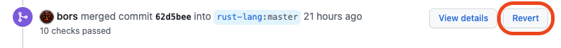

Review policies
Every PR that lands in the compiler and its associated crates must be reviewed by at least one person who is knowledgeable with the code in question.
When a PR is opened, you can request a reviewer by including r? @username in the PR description. If you don’t do so, rustbot
will automatically assign someone.
It is common to leave a r? @username comment at some later point to
request review from someone else. This will also reassign the PR.
bors
We never merge PRs directly. Instead, we use bors. A qualified
reviewer with bors privileges (e.g., a compiler
contributor) will leave a comment like @bors r+.
This indicates that they approve the PR.
People with bors privileges may also leave a @bors r=username
command. This indicates that the PR was already approved by
@username. This is commonly done after rebasing.
Finally, in some cases, PRs can be “delegated” by writing @bors delegate+ or @bors delegate=username. This will allow the PR author
to approve the PR by issuing @bors commands like the ones above
(but this privilege is limited to the single PR).
Reverts
If a merged PR is found to have caused a meaningful unanticipated regression, the best policy is to revert it quickly and re-land it later once a fix and regression test are added.
A “meaningful regression” in this case is up to the judgment of the person approving the revert. As a rule of thumb, this would be a bug in a stable or otherwise important feature that causes code to stop compiling, changes runtime behavior, or triggers a (warn-by-default or higher) lint incorrectly in real-world code.
When these criteria are in doubt, and especially if real-world code is affected, revert the PR. This allows bleeding edge users to continue to use and report bugs on HEAD with a higher degree of certainty about where new bugs are introduced.
Before being reverted, a PR should be shown to cause a regression with a fairly high degree of certainty (e.g. bisection on commits, or bisection on nightlies with one or more compiler team members pointing to this PR, or it’s simply obvious to everyone involved). Only revert with lower certainty if the issue is particularly critical or urgent to fix.
Creating reverts
The easiest method for creating a revert is to use the “Revert” button on Github. This appears next to the “bors merged commit abcd” message on a pull request, and creates a new pull request.

Alternatively, a revert commit can be created using the git CLI and then uploaded as a pull request:
$ git revert -m 1 62d5bee
It’s polite to tag the author and reviewer of the original PR so they know what’s going on. You can use the following message template:
Reverts rust-lang/rust#123456
cc @author @reviewer
This revert is based on the following report of a regression caused by this PR:
<link to issue or comment(s)>
In accordance with the compiler team [revert policy], PRs that cause meaningful
regressions should be reverted and re-landed once the regression has been fixed
(and a regression test has been added, where appropriate).
[revert policy]: https://forge.rust-lang.org/compiler/reviews.html#reverts
Fear not! Regressions happen. Please rest assured that this does not
represent a negative judgment of your contribution or ability to contribute
positively to Rust in the future. We simply want to prioritize keeping existing
use cases working, and keep the compiler more stable for everyone.
r? compiler
If you have r+ privileges, you can self-approve a revert.
Generally speaking, reverts should have elevated priority and match the rollup
status of the PR they are reverting. If a non-rollup PR is shown to have no
impact on performance, it can be marked rollup=always.
Forward fixes
Often it is tempting to address a regression by posting a follow-up PR that, rather than reverting the regressing PR, instead augments the original in small ways without reverting its changes overall. However, if real-world users have reported being affected, this practice is strongly discouraged unless one of the following is true:
- A high-confidence fix is already in the bors queue.
- The regression has made it to a release branch (beta or stable) and a
backport is needed. Often the “smallest possible change” is desired for a
backport. The offending PR may or may not still be reverted on the main
branch; this is left to the discretion of someone who can
r+it.
While it can feel like a significant step backward to have your PR reverted, in most cases it is much easier to land the PR a second time once a fix can be confirmed. Allowing a revert to land takes pressure off of you and your reviewers to act quickly and gives you time to address the issue fully.
Rollups
All reviewers are strongly encouraged to explicitly mark a PR as to whether or
not it should be part of a rollup. This is usually done either when approving a
PR with @bors r+ $ROLLUP_STATUS or with @bors $ROLLUP_STATUS where $ROLLUP_STATUS
is substituted with one of the following:
rollup=always: These PRs are very unlikely to break tests or have performance implications. Example scenarios:- Changes are limited to documentation, comments, etc. that is highly unlikely to fail a build.
- Changes cannot have performance implications.
- Your PR is not landing possibly-breaking or behavior altering changes.
- Feature stabilization without other changes is likely fine to rollup, though.
- When in doubt do not use this option!
rollup=maybe: This is the default if@bors r+does not specify any rollup status at all. Use this if you have some doubt that the change won’t break tests. This can be used if you aren’t sure if it should be one of the other categories. Since this is the default, there is usually no need to explicitly specify this, unless you are un-marking the rollup level from a previous command.rollup=iffy: Use this for mildly risky PRs (more risky than “maybe”). Example scenarios:- The PR is large and non-additive (note: adding 2000 lines of completely new tests is fine to rollup).
- Messes too much with:
- LLVM or code generation
- bootstrap or the build system
- build-manifest
- Has platform-specific changes that are not checked by the normal PR checks.
- May be affected by MIR migrate mode.
rollup=never: This should never be included in a rollup (please include a comment explaining why you have chosen this). Example scenarios:- May have performance implications.
- May cause unclear regressions (we would likely want to bisect to this PR specifically, as it would be hard to identify as the cause from a rollup).
- Has a high chance of failure.
- Is otherwise dangerous to rollup.
rollup: this is equivalent torollup=alwaysrollup-: this is equivalent torollup=maybe
Priority
Reviewers are encouraged to set one of the rollup statuses listed above instead of setting priority. Bors automatically sorts based on the rollup status (never is the highest priority, always is the lowest), and also by PR age. If you do change the priority, please use your best judgment to balance fairness with other PRs.
The following is some guidance for setting priorities:
- 1-5
- P-high issue fixes
- Toolstate fixes
- Reverts containing the above
- Beta-nominated PRs
- Submodule/Subtree updates
- 5+
- P-critical issue fixes
- 10+
- Bitrot-prone PRs (particularly very large ones that touch many files)
- Urgent PRs
- Beta backports
- 20+
- High priority that needs to jump ahead of any rollups
- Fixes or changes something that has a high risk of being re-broken by another PR in the queue.
- 1000
- Absolutely critical fixes
- Release promotions
Expectations for r+
bors privileges are binary: the bot doesn’t know which code you are familiar with and what code you are not. They must therefore be used with discretion. Do not r+ code that you do not know well – you can definitely review such code, but try to hand off reviewing to someone else for the final r+.
Similarly, never issue a r=username command unless that person has
done the review, and the code has not changed substantially since the
review was done. Rebasing is fine, but changes in functionality
typically require re-review (though it’s a good idea to try and
highlight what has changed, to help the reviewer).